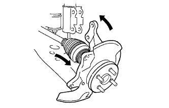
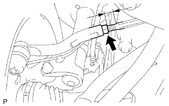
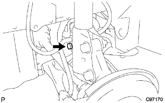
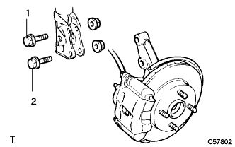

フロントトランスアクスルケース オイル シール NO.1（U340F） 取り付け |
| 1. フロントトランスアクスルケース オイル シール NO.1取り付け |
SSTおよびハンマーを使用して、新品のオイルシールを取り付ける。
オイルシールのリップ部にMPグリースNo.2を塗布する。
| 2. フロントドライブ シャフトASSY LH取り付け |
インボードジョイントASSY LHのスプライン部にオートフルードタイプT-IVを塗布する。
 |
インボードジョイントASSY LHのスプラインをかん合させ、ブラスバーおよびハンマーを使用して、フロントドライブシャフトASSY LHを挿入する。
| 3. フロントアクスルASSY LH取り付け |
|  |
フロントアクスルASSY LHを車両外側に押して、フロントアクスルASSY LHにフロントドライブシャフトASSY LHのスプラインをかん合させ、挿入する。
 |
フロントアクスルASSYをショックアブソーバに取り付け、車両前方からボルト２本を挿入し、ナット２個を締め付ける。
| 4. タイロッドエンドLH取り付け |
タイロッドエンドLHをステアリングナックルに取り付け、キャッスルナットで締め付ける。
新品のコッターピンを取り付ける。
| 5. スピード センサ FR LH取り付け |
 |
ボルトで、スピードセンサFR LHをステアリングナックルに取り付ける。
 |
スピードセンサFR LHのクランプおよびフレキシブルホースをフロントショックアブソーバASSY LHに取り付ける。
| 6. フロントディスクブレーキキャリパASSY LH取り付け |
合わせマークをあわせてフロントディスクを取り付ける。
 |
ボルト2本でディスクブレーキキャリパASSYをステアリングナックルに取り付ける。
| 7. フロントアクスル シャフト ナット LH取り付け |
ソケットレンチ(30mm)を使用して、新品のフロントアクスルハブナットLHを取り付ける。
 |
タガネおよびハンマーを使用して、フロントアクスルハブナットLHをかしめる。
| 8. エンジンアンダ カバー LH取り付け |
スクリュー2個およびボルト2本で、エンジンアンダカバーLHを取り付ける。
| 9. フロントタイヤ取り付け |
| 10. オートマチックトランスアクスルフルード補充 |
| 11. オートマチックトランスアクスルフルード量点検 |
パーキングブレーキを作用させる。
ブレーキペダルを踏み、エンジンを始動する。
アイドル回転状態でシフトレバーをPからLまでの各レンジにゆっくりシフトした後、Pレンジに戻す。
 |
アイドル回転状態でレベルゲージを抜き、ウエスなどでオイルを拭き取り、再度挿入してオイルがレベルゲージの[HOT]の範囲にあることを確認する。
オイル量の少ないときは、オイル漏れを点検する。
| 12. トランスファオイル補充 |
| 13. トランスファオイル点検 |
| 14. トランスファオイル調整 |
| 15. タイヤ点検 |
参照| 16. 車高点検 |
 |
車両のコーナーを大きく上下に動かし、サスペンションを落ち着かせてから車高を点検する。
| タイヤサイズ | A寸法-B寸法 [mm] | D寸法-C寸法 [mm] |
|---|---|---|
| 175/70R14 | 92 | 39 |
| 17. サイドスリップ点検 |
サイドスリップテスターでサイドスリップを点検する。
基準値外の場合はホイールアライメントを点検する。
| 18. トーイン点検 |
車両をゆすり、車両を安定させる。
車両を直進で5ｍ手押しして前進させる。
 |
トーインゲージの指針高さをフロントホイール軸中心高さに合わせ、タイヤの後ろ側に入れる。
前輪タイヤ各々の後部にトレッドセンターをしるし、マーク間の距離(B寸法)を測定する。
車両をゆっくり押して前進させ、前輪を180°回転させる。
 |
車両前部でマーク間の距離(A寸法)を測定する。
トーインを求める。
| 19. トーイン調整 |
|  |
左右のラックエンドのねじ部の長さを測定する。
ラックブーツのクリップをはずす。
タイロッドエンドのロックナットをゆるめる。
ラックエンドねじ部の左右差が基準外の場合は調整を行う。
トーインの測定値がアウト側にはずれる場合は、寸法の短い方のラックエンドを伸ばす方向に調整する。
トーインの測定値がイン側にはずれる場合は、寸法の長い方のラックエンドを縮める方向に調整する。
再度トーインを点検する。
左右のラックエンドを各々の反対方向に同量ずつ回し、トーインが基準値内に入るように調整する。
タイロッドエンドのロックナットを締め付ける。
 |
プライヤーを使用して、クリップを図の範囲に取り付ける。
| 20. ホイール切れ角点検 |
 |
ターニングラジアスゲージをセットする。
ホイールの切れ角を点検する。
| 内側(点検範囲) | 外側(参考) |
|---|---|
| 39°±2° | 34° |
| 21. キャンバー、キャスター、キングピンアングル点検 |
ホイールキャップまたはセンターオーナメントを取りはずす。
車両を平坦な場所でリフトアップする。
タイヤクランプコンペンセータ(TCK-01)を取り付ける。
タイヤクランプコンペンセータのクランプダイヤルを回し、タイヤクランプアームを広げる。
 |
ダイヤルを回し、下側ツメ2箇所をホイールサイズに合わせホイールリム下部に当て上側ツメをホイールリムに合わせて縮める。
 |
クランプダイヤルを回し、タイヤクランプアームを縮めタイヤに取り付ける。
脱落防止ワイヤーをホイールのエアーバルブに取り付ける。
タイヤクランプコンペンセータを補正する。
 |
タイヤクランプコンペンセータの補正ダイヤルを回してメカゼロライン(赤ライン)の範囲内に合わせる。
 |
キャンバーキャスターキングピンゲージをタイヤクランプコンペンセータの取り付けプレートに取り付け、合わせマークを合わせる。
 |
ホイールを少し回転させ、キャンバーキャスターキングピンゲージの水平気泡が中心になるように合わせ、キャンバーキャスターキングピンゲージの調整ネジでキャスター気泡を0°に合わせる。
 |
ホイールを180°回転させ、キャンバーキャスターキングピンゲージとタイヤクランプコンペンセータの合わせマークを合わせ、水平気泡を合わせる。(*1)
 |
上記状態のキャスター気泡を読み取り、その値の1/2の目盛りになるようにタイヤクランプコンペンセータの補正ダイヤルを回し合わせる。(*2)
前記(*1)、(*2)の手順を繰り返し、キャスター気泡の目盛り位置がホイールを180°正、反転させても、一定の数値目盛りを指示すればキャンバーキャスターキングピンゲージのセットは完了。
ターニングラジアスゲージをセットし、車両を降ろす。
キャンバー、キャスターおよびキングピンアングルを点検する。
| キャンバー | キャスター | キングピンアングル |
|---|---|---|
| -0°40'±45' | 2°00'±45' | 10°15'±45' |
キャンバーキャスターキングピンゲージおよびタイヤクランプコンペンセータを取りはずす。
ホイールキャップまたはセンターオーナメントを取り付ける。
| 22. キャンバー調整 |
車両をジャッキアップして、フロントタイヤを取りはずす。
|  |
ボルトをはずし、スピードセンサおよびフレキシブルホースを切り離す。
 |
ショックアブソーバロワー側の取り付けナット2個を緩める。
 |
ショックアブソーバのロワー側を動かして、ボルトとステアリングナックルのボルト穴のガタでキャンバーを調整する。
|
ナット2個を締め付ける。
ボルトで、フレキシブルホースおよびスピードセンサを取り付ける。
フロントタイヤを取り付ける。
車両をジャッキダウンして数回上下にゆすり、サスペンションを落ち着かせる。
キャンバーを点検する。
基準値内の場合は、トーイン点検を行う。
基準値外の場合は、ジャッキアップしてフロントタイヤをはずし、スピードセンサおよびフレキシブルホースを切り離し以下の作業を行う。
 |
ショックアブソーバロワー側の取り付けナット2個およびボルト2本を取りはずす。
 |
アジャスティングボルト2本を選択して、車両前方から挿入する。
| アジャスティングボルト | 品番 | ボルト径 (mm) | 調整量 |
|---|---|---|---|
| A | 90105-14146 | 13 | ±15’ |
| B | 90105-14147 | 12 | ±30’ |
| キャンバー調整量 | セットボルト | 90105-14146 | 90105-14147 |
|---|---|---|---|
| -1°00'--45' | 1、2 | ||
| -45'--30' | 1 | 2 | |
| -30'--15' | 1 | 2 | |
| -15'-0' | 1 | 2 | |
| 0'-15' | 1 | 2 | |
| 15'-30' | 1 | 2 | |
| 30'-45' | 1 | 2 | |
| 45'-1°00' | 1、2 |
|
ナット2個を取り付ける。
ボルトで、フレキシブルホースおよびスピードセンサを取り付ける。
フロントタイヤを取り付ける。
車両をジャッキダウンして数回上下にゆすり、フロントサスペンションを落ち着かせる。
キャンバーを再度点検する。
トーインを点検する。
サイドスリップを点検する。
| 23. テストモード点検(スピードセンサ系統) |
参照)